We left early Friday morning for Bangalore (officially Bengaluru) — the capital of the Indian state of Karnataka in south India and the third-most populous city in India. In India, to enter any place with a large gathering of people — malls, metros, airports —you have to go through a security check. There are separate security lines for men and women, and women usually go behind a curtain. At airport security there’s no large X-ray machine you walk through — they do it the old-fashioned way. And unlike in the U.S., you have to carry your boarding pass with you so they can stamp it. Save for the boy on the flight who was adorable but constantly shrieking, it was a fine 2.5-hr flight.
Bangalore had a tropical feel — palm trees, coconut trees, and a nice breeze. It was nice and cool AND not humid!! I forgot weather could be like this.
But first, we were there to visit a wind farm. It was a 4-hr drive to the site in Andhra Pradesh, a very rural agricultural state nearby (I can now say I’ve been to 4 states in India: Delhi, Haryana, Karnataka, and Andhra Pradesh!). After a late lunch of roti and rice with various veg curries, they gave us a health and safety lecture with a quite lengthy safety pledge, which we found quite amusing — “national economy” and “disease” were somehow incorporated in there. They showed us an old computer containing data for each turbine, and showed us the control room where they control and monitor the transformer, among other things.
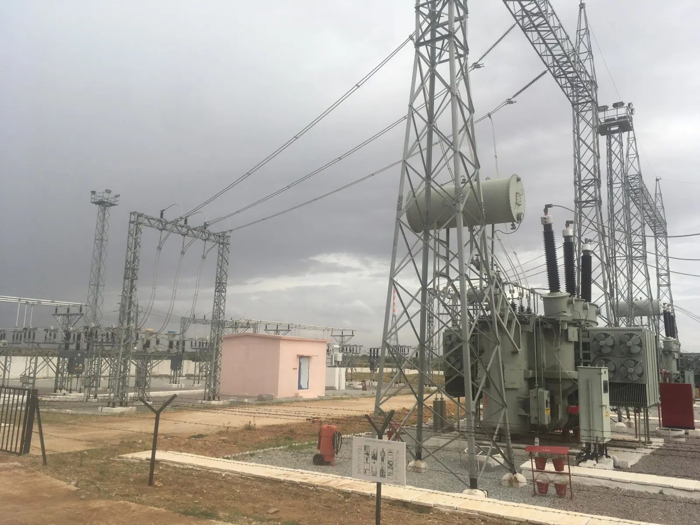
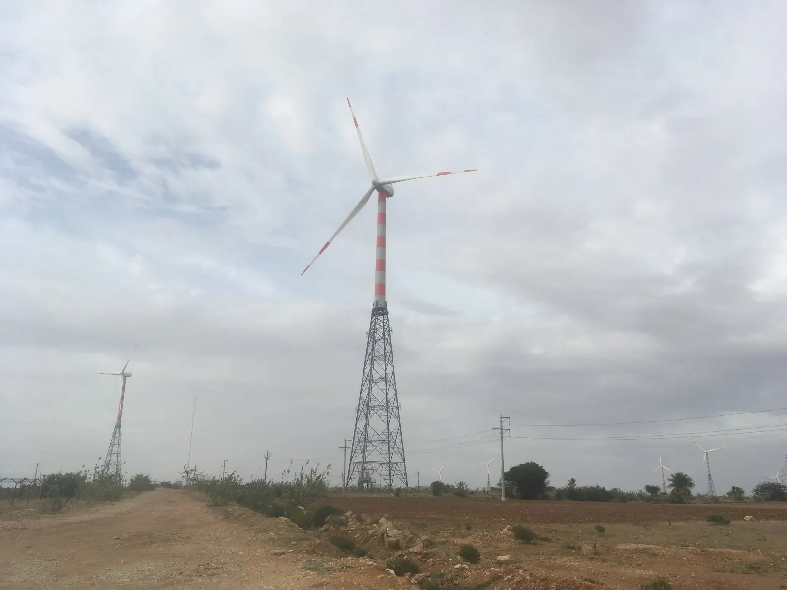
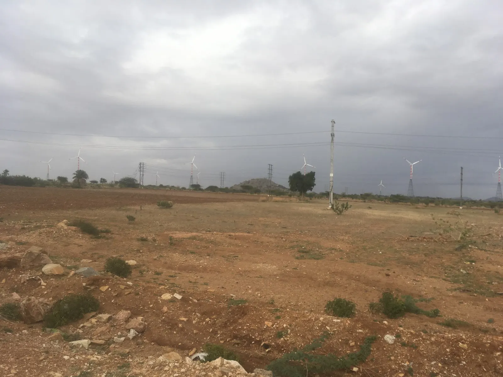
I’ve never been to a wind farm, so coming this close up to a wind turbine was pretty awesome – they’re quite tall! They make a low whirring sound but otherwise are quiet. A benefit of visiting a wind farm is that it is usually nice and windy there!
It was another 5-hr car ride back to Bangalore and through horrific traffic to Koramangala, where we had really really spicy (like really spicy) north Indian food for dinner — curries with rice and meat and roti, a salty meat filled pancake, and hot red chicken soup (which I could not eat). After dinner we went to a place called Wtf where its menus looked like wedding invitations and the W on the menu reminded us of Walt Disney. I was craving ice cream – something cold – but their specialty was waffles so I ended up getting a banana vanilla ice cream bubble waffle, which was more waffle and less ice cream than I wanted.
The site visit provided a good excuse to stay in Bangalore for the weekend. The city is referred to as the Silicon Valley of India and is known for the good food, pleasant weather, shopping, and nightlife. There isn’t a lot of touristy stuff to do here, but you can easily spend an entire day in the city center, reading in a coffee shop or exploring the street markets or walking in the park – it’s a great city to relax in.
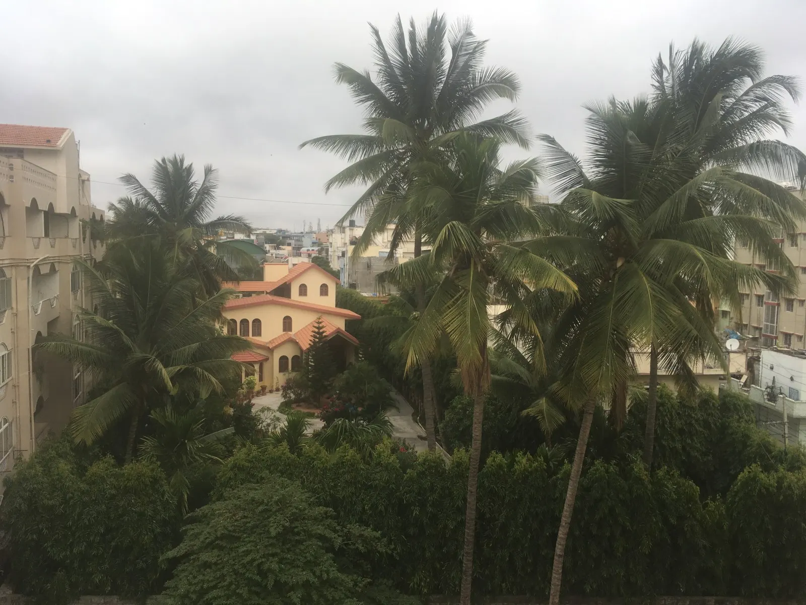
The place to go for dosas is Vidyarthi Bhavan. The traffic was bad even though it was a Saturday morning; the estimated arrival time kept getting later and later as my stomach continued to eat itself. During the 30-minute wait we walked around outside, where the street was lined with flower and fruit carts:
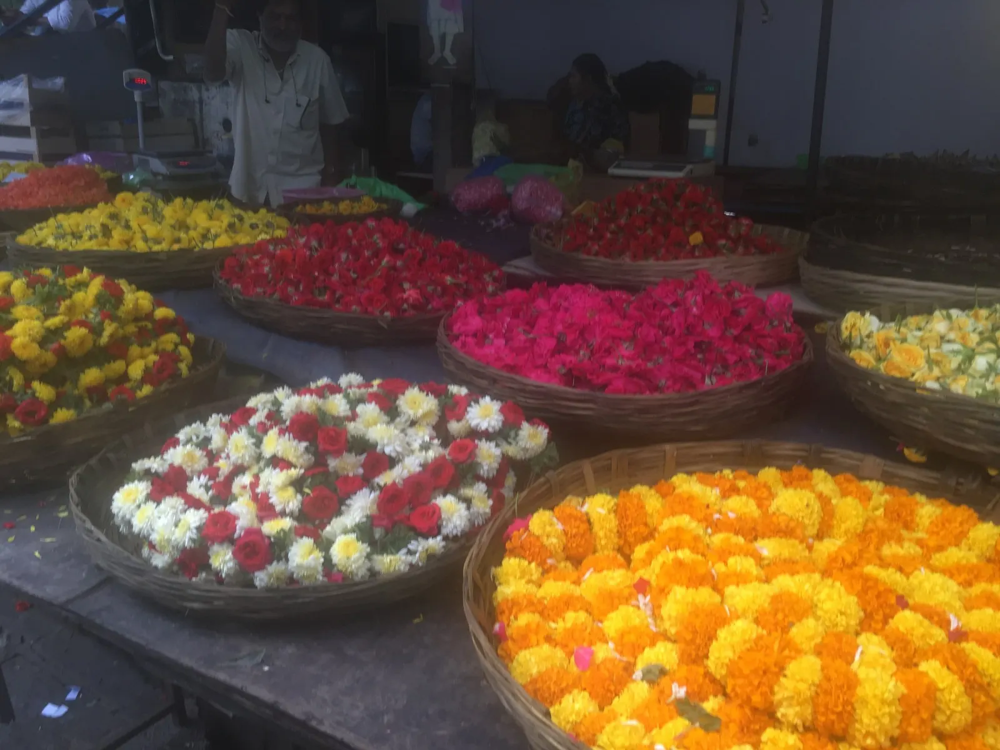
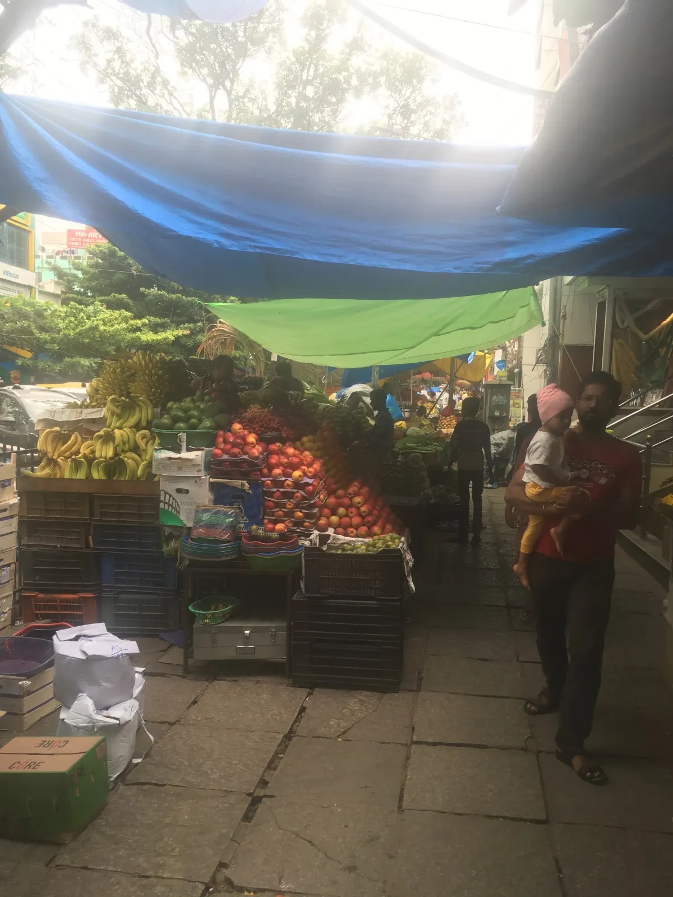
The wait was well worth it: we had masala dosas (fried with potato filling – the best dosa I’ve had yet), vada (fried savory donut shaped pastry), and kesari bath (a yellow lightly sweetened mush). You could tell it was a good place by the long lines and the locals that filled the room, and the entire meal only cost $4 for the 4 of us!
From there it was a short walk to the Lalbagh Botanical Garden: it wasn’t spectacular, but it’s a nice area to walk in if you’re looking for green scenery. There was a lake, lots of chipmunks and trees, a glasshouse dedicated to Prince Albert of Wales when he visited Bangalore, a tiny “Japanees” garden with dead bamboo plants and plastic statues, and a floral clock with statues of the seven little dwarves and Bambi in front of it.
If you’re in Bangalore you have to go to Church Street, which is the closest thing to Fifth Avenue here. It is a bustling street of local and international shops, cafés, and restaurants.
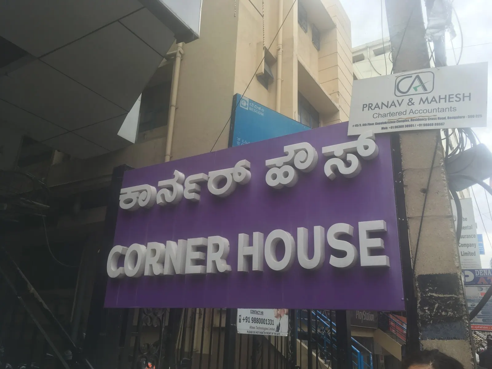
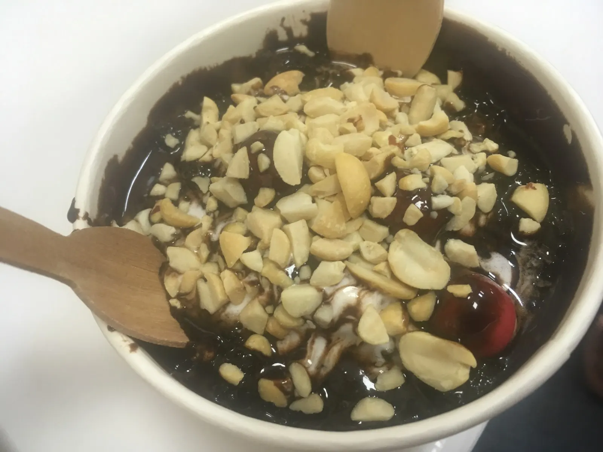
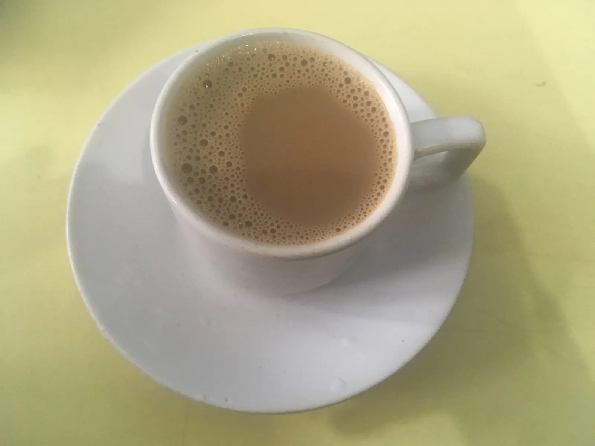
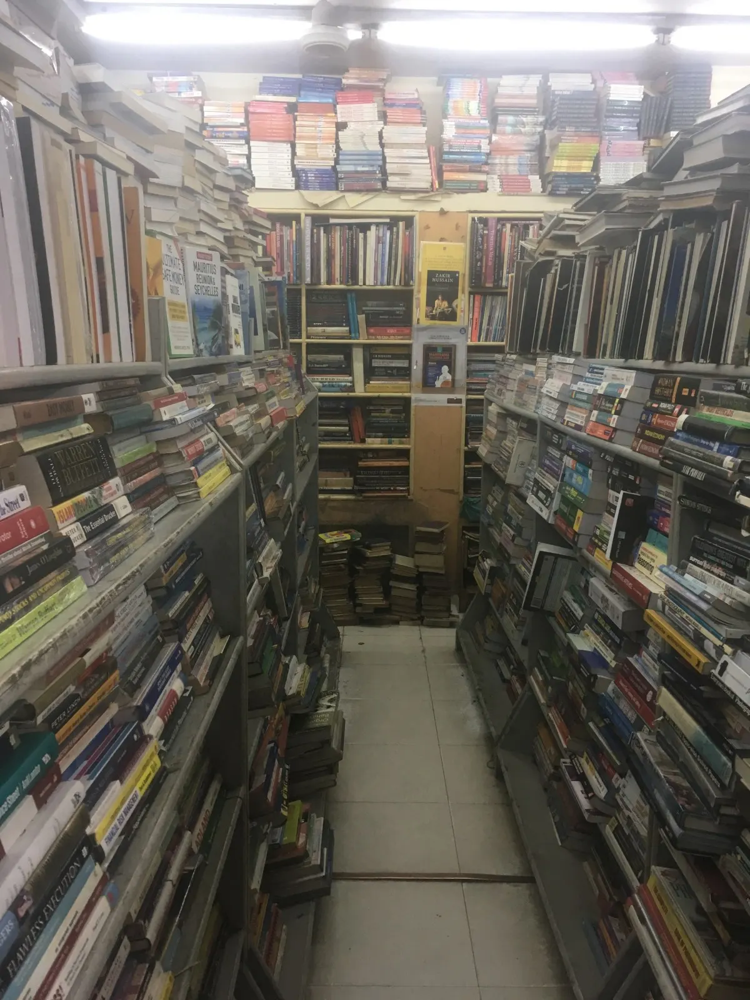
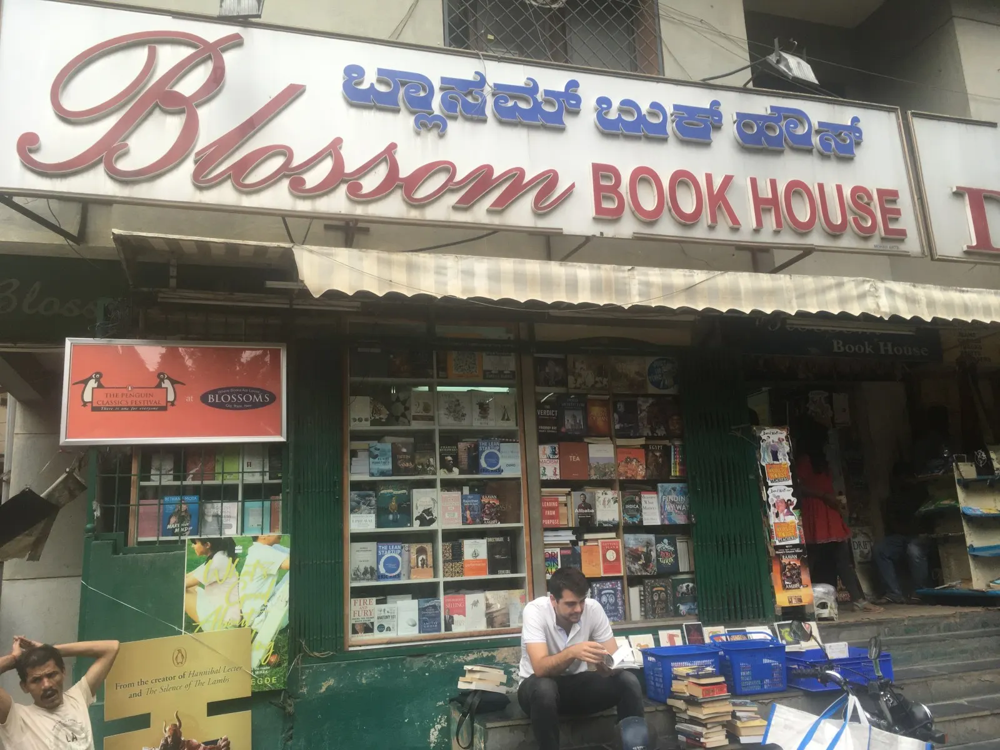
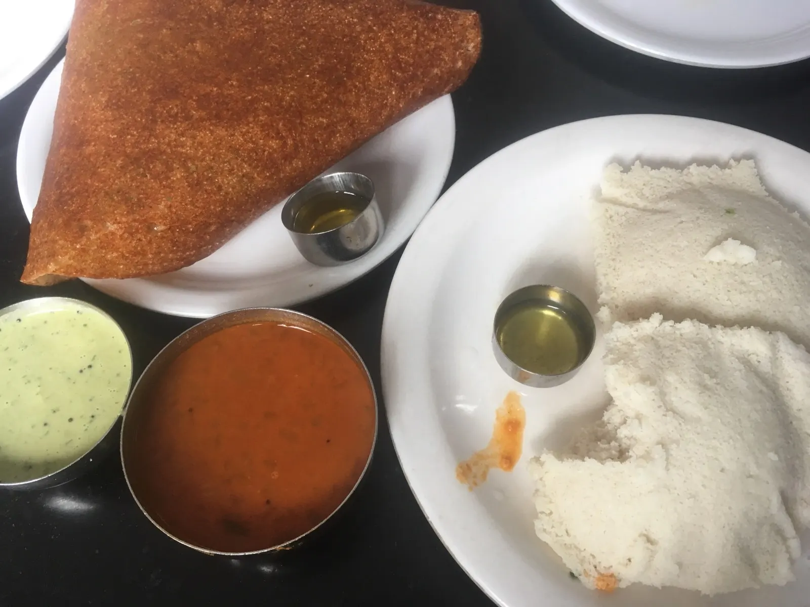
The rest of the day was spent at the Bannerghatta Biological Park. We rode the bus safari — it wasn’t a wildlife safari in a Jeep (my expectations were a little high), but for the size of the park we saw a wide range of animals, including lions, Bengal tigers (white striped ones too), bears, and elephants. A couple tigers came pretty close to the bus, though I felt sad when we realized they were probably drugged so that they would come close to us. There was also a butterfly garden with lots of butterflies – I saw a lot of the common castor (a dull wooden brown species that comes back to the same spot from where it takes off) and the striped tiger.
It seemed like a zoo, even though it was more like a conservation park. It’s a delicate balance to strike between conservation and tourism—whether the things you’re doing are really for the benefit of the animals—or whether they promote your own interests.
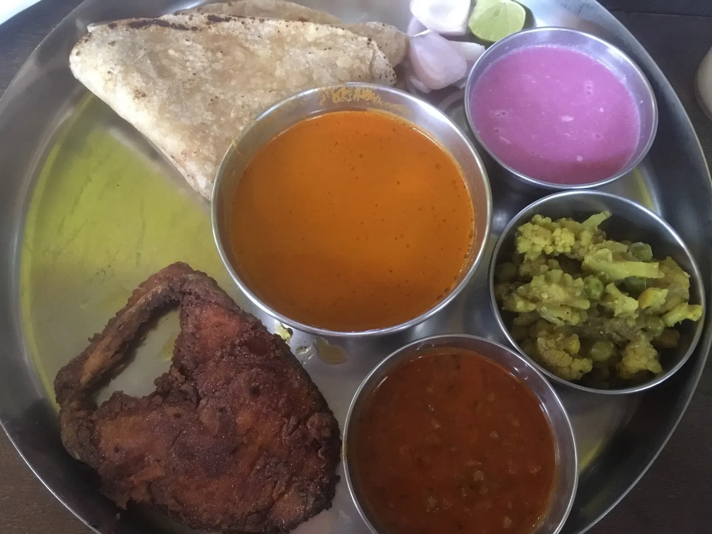
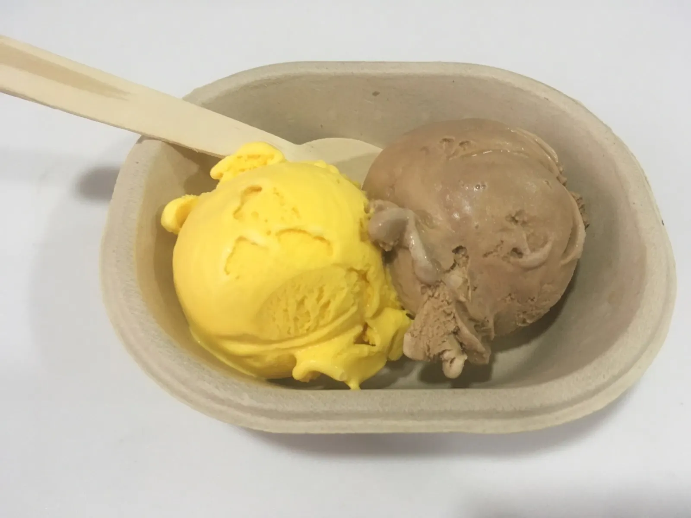
On the flight back to Delhi I started reading Gandhi’s My Experiments with Truth – he has a wonderful sense of humor and seems like a very interesting person I would have loved to meet.
When we stepped out of the plane around 1:30am, we immediately stepped into the humid muggy Delhi air, which reminded us once again what penetrating heat feels like – even at 1:30am – making us miss Bangalore already.